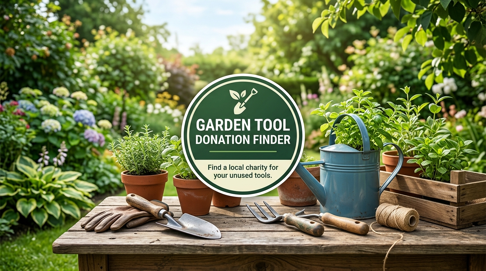

10 Places to Donate Garden Tools
Explore common organizations that may accept used lawn and garden gear. Policies vary by location, so always verify beforehand.
Habitat ReStore
Suitable items: Hand tools, lawn mowers, tillers, and building materials.
Why contact them: Proceeds support local affordable housing.
What to verify: Working condition, electrical safety, and local branch intake rules.
Goodwill
Suitable items: Clean hand tools and compact equipment.
Why contact them: Community job training programs.
What to verify: Whether your regional retail branch accepts outdoor tools and lawn gear.
Salvation Army
Suitable items: Functional shovels, rakes, and working power equipment.
Why contact them: Adult rehabilitation and family support services.
What to verify: Local drop-off rules and pickup eligibility for bulky equipment.
Community Gardens
Suitable items: Shovels, rakes, trowels, wheelbarrows, hoses, and sturdy pots.
Why contact them: Direct community food production and green spaces.
What to verify: Current seasonal need, storage space, and volunteer receiving times.
Tool Libraries
Suitable items: Well-maintained power tools, specialty garden implements, and hand tools.
Why contact them: Shared tool access for community members.
What to verify: Tool inventory needs, sharpness, cords, and safety guard requirements.
Local Nonprofits
Suitable items: Urban farming gear, wheelbarrows, garden hoses, and landscaping supplies.
Why contact them: Local environmental and neighborhood development work.
What to verify: Specific wish-list requests and drop-off coordination.
Reuse Centers
Suitable items: Sturdy hand tools, hardware, and home improvement surplus.
Why contact them: Waste diversion and affordable materials reuse.
What to verify: Possible intake fees, fuel tank rules, and accepted tool conditions.
School & Youth Programs
Suitable items: Safe hand tools, seed-starting supplies, and horticultural gear.
Why contact them: Vocational agricultural education and youth gardening clubs.
What to verify: School district donation approval and equipment safety standards.
Thrift Organizations
Suitable items: Everyday gardening tools, planters, and decorative yard supplies.
Why contact them: Local charitable fundraising through thrift retail.
What to verify: Sharp-edge packaging guidelines and electrical item acceptance.
Local Donation Centers
Suitable items: Various household tools and outdoor equipment.
Why contact them: General charitable collection and redistribution.
What to verify: Exact items accepted and local donation receipt availability.
What Garden Tools Can You Donate?
Clean, safe and usable items are generally the best candidates, though every organization makes its own determination.
Shovels, Rakes & Hoes
If you are deciding where to donate shovels and rakes, common hand tools like round-point shovels, leaf rakes, garden hoes, spades, and trowels are frequently accepted by community programs when wooden handles are sound and metal heads are intact.
Pruning Tools & Shears
Pruning shears, loppers, hedge shears, and cultivators can be very useful if cutting blades work smoothly, safety locks function properly, and pivot bolts are secure.
Wheelbarrows & Supplies
Wheelbarrows with sound basins and inflated tires, garden hoses without major leaks, clean nursery pots, stakes, and tomato cages may have direct local reuse opportunities.
Lawn Equipment
When researching where to donate lawn equipment like push mowers, string trimmers, edgers, and leaf blowers, keep in mind organizations often have stricter intake guidelines. Charities may require fuel tanks to be drained or battery packs and chargers to be included.
Power Tools
Electric and cordless hedge trimmers, tillers, and chainsaws must be inspected carefully. Organizations generally require intact power cords, operational switches, and original safety guards.
Broken or Rusty Tools
Light surface rust is often acceptable, but severely damaged, cracked, or unsafe tools are better suited for scrap metal recycling or municipal disposal than donation.
Donation Preparation Checklist
0% complete
Garden Tool Donation Options: Cautious Comparison
A realistic overview of typical intake tendencies, pickup availability, and what donors should verify before traveling.
| Donation Option | Garden Tools | Pickup | What to Verify |
|---|---|---|---|
| Habitat ReStore | May accept usable hand tools, lawn mowers, and power equipment depending on local store inventory. | Varies by location; sometimes offered for large equipment lots. | Working condition, electrical safety, and local branch intake guidelines. |
| Goodwill | May accept select clean hand tools and compact equipment; policies differ significantly by regional organization. | Rarely offered; typically drop-off only. | Whether the local retail drop-off bay accepts outdoor tools and lawn gear. |
| Salvation Army | May accept functional hand tools and working yard gear at participating donation centers. | Available in select zip codes; scheduled online where offered. | Current pickup eligibility, item condition standards, and local receipt rules. |
| Community Gardens | Often welcome shovels, rakes, hoes, trowels, wheelbarrows, and clean planters. | No; drop-off only by mutual coordination. | Immediate seasonal need, storage space, and volunteer drop-off times. |
| Tool Libraries | Frequently accept quality hand tools, power trimmers, and specialty landscaping gear. | No; drop-off during operating hours. | Inventory requirements, blade sharpness, cords, and safety guards. |
| Local Reuse Centers | May accept building, architectural, and surplus garden equipment in sound shape. | Varies; occasional fee-based or partner pickup. | Intake policies, any handling fees, and fuel drainage requirements. |
Garden Tool Donation Guide
Practical answers and guidelines for people looking to give gardening equipment a second life.

How to prepare garden tools for donation
Taking a few minutes to clean and inspect tools greatly increases the likelihood that a charity or community garden will accept them. Brush off dry soil, wipe down handles, and check that blades or tines are firmly attached. For powered garden equipment like lawn mowers or trimmers, clean air filters, confirm the cord or starter works, and inquire with the charity whether fuel and oil must be emptied before drop-off.
Handling power equipment and lawn mowers
Unlike simple shovels and rakes, powered equipment carries additional safety and environmental considerations. Some charities cannot accept gas-powered mowers due to fire regulations or lack of technical staff to test them. If you have an electric or battery-powered tool, keeping the charging cradle, battery, and safety shields together makes the item immediately useful for the next recipient.
When to recycle instead of donate
If a tool has a severely cracked wooden handle, a bent shaft that makes it hazardous to swing, or a burnt-out motor, donation may simply shift the disposal burden onto a nonprofit. In such cases, metal recycling facilities or local hazardous waste collection days (for gas equipment or lithium batteries) are the responsible choice.
Where to donate old garden tools responsibly
If you are deciding where to donate old garden tools, evaluate usability before transporting them. Older tools made of forged steel or solid ash wood are often exceptionally durable and coveted by community gardens and tool libraries. When you choose to donate used garden tools that only require light oiling or sharpening, you keep quality implements in active service and out of landfills.
Garden Tool Donation Near Me: Local Search Guidance
Search locally, then verify the exact organization's current rules before you travel.
Finding reliable garden tool donation near me is straightforward when you use targeted category searches. Because there is no single nationwide database that monitors daily tool inventory across independent charities, local search tools serve as helpful starting points. Suitable search categories include community gardens, tool libraries, reuse centers, donation centers, Habitat ReStores, Goodwill organizations, independent thrift stores, and municipal recycling centers.
Related Donation Tools & Calculators
Explore practical utilities to help you value, inspect, and document your donation.
Fair Market Value Estimator
Calculate an illustrative planning range for used garden tools and lawn equipment. Some qualifying charitable donations may be deductible under applicable tax rules. Keep appropriate records and consult current IRS guidance or a qualified tax professional.
Equipment Safety & Condition Inspector
Run a quick 8-point eligibility diagnostic to verify whether your tools are ready for charity donation, need minor cleaning, or should be redirected to scrap recycling.
Frequently Asked Questions
Where can I donate garden tools near me?
Start with local charities, community gardens, Habitat ReStore locations, thrift or reuse organizations, tool libraries, schools, and nonprofits. Enter your ZIP code or city in the finder above to generate local search options, then confirm the exact organization's current donation policy before visiting.
Who accepts old garden tools?
Possible options include reuse centers, community gardens, tool libraries, local charities, thrift organizations, and some Habitat ReStore or Goodwill locations. Acceptance varies by local branch and item condition.
Can I donate used shovels and rakes?
Clean, safe, and usable shovels, rakes, and similar hand tools may be accepted by community programs, reuse organizations, charities, or tool libraries. Confirm the receiving organization's policy first.
Does Habitat ReStore accept garden tools?
Some Habitat ReStore locations may accept usable tools or home-improvement items, but donation rules differ by location. Check the official local ReStore guidance before donating.
Where can I donate lawn equipment?
Some charities, reuse programs, and community organizations may accept lawn equipment. Powered equipment often has additional requirements, so confirm acceptance, condition, fuel requirements, and pickup or drop-off rules first.
What should I do with old gardening tools?
If an old tool is safe and usable, consider donating or reusing it. Clean and inspect it first. Broken or unsafe items may need repair, recycling, or another appropriate disposal route.
Should I clean garden tools before donating?
Yes. Remove soil, grass, and loose debris, dry the item, inspect it for damage, and keep important accessories together when possible.
Can donated garden tools qualify for a tax deduction?
Some qualifying charitable donations may be deductible under applicable tax rules. Keep appropriate documentation and consult current official tax guidance or a qualified tax professional. This website does not determine deductibility.
How We Keep This Guide Useful
Garden Tool Donation Finder is an independent informational resource designed to help donors find practical reuse routes for lawn gear, hand tools, and gardening supplies.
Because donation acceptance policies vary by branch and change over time, organizations can adjust the items they accept without public notice. Users should always confirm accepted items, hours, and intake requirements directly with the specific organization before visiting.
This site does not present unverified local businesses as confirmed listings, nor does it guarantee acceptance, pickup, availability, or valuation. Tax information provided across this site is for general educational reference only and does not constitute professional tax advice.
About This Resource
We aim to encourage sustainable tool reuse and community gardening initiatives by connecting donors with legitimate charitable and civic channels.
Privacy Notice
The finder uses the location or postal code you enter solely to generate on-page search links. Browser location is requested only when you choose the location button. No sensitive personal information is stored or collected.